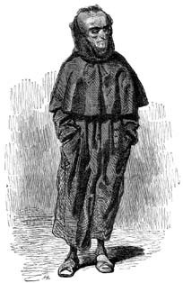
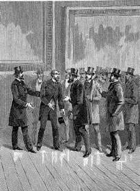

28 Mart 1897
Rahip Bey,
Sadece yazan kişi tarafından okunması beklenen bir güncenin mesaj alışveriş panosuna dönüşmesi ilginç. Ama işte şimdi bir gün buradan geçerken okuyacağınızdan neredeyse emin olarak ben de size bir mektup yazıyorum.
Hakkımda çok fazla şey biliyorsunuz. Dün geceyi, sol elimde kandille, sağ elimde sizinle karşılaşmayı ve –izninizle– sizi vurmayı umut ettiğim tabancayla ikimizin evini köşe bucak araştırarak geçirdim. Çok nahoş bir tanıksınız. Ve aşırı derecede katısınız.
Evet, Carbonaro olma heveslisi yoldaşlarıma ve Rebaudengo'ya karşı sizin vaazlarınızda yer alamayacak bir ahlaksızlık sergiledim, kabul ediyorum. Ama gerçeği söyleyelim: Rebaudengo alçağın tekiydi ve sonradan yaptıklarımı düşündüğümde benim de sadece alçaklara karşı alçakça davrandığımı sanıyorum. O çocuklara gelince; onlar coşkulu insanlardı ve coşkulu insanlar bu dünyanın dışkısıdır, çünkü savaşlara ve devrimlere yol açan onların müphem ilkelerinin yarattığı coşkudur. Ve artık bu dünyada coşkulu bağnazların sayısı azaltılamayacağına göre onların bu heyecanından çıkar sağlamanın daha iyi olacağını anladım.
İzin verirseniz kendi anılarıma dönüyorum. Rebaudengo'nun noterlik bürosunun başındayım ve Rebaudengo'nun yardımcısı olarak sahte noterlik belgeleri düzenlediğim için, şimdi, burada Paris'te de aynı işi yapıyor olmam beni şaşırtmıyor.
Şimdi Cavalier Bianco'yu da iyi hatırlıyorum. Bir gün bana şöyle demişti: "Bakın Avukat Bey, Cizvitler Sardinya Krallığı'ndan sürüldüler ama herkes onların eylem yapmayı ve değişik kisveler altında müritliklerini sürdürdüklerini biliyor. Kovuldukları bütün memleketlerde yaşanıyor bu; bana yabancı bir gazetede yayımlanan komik bir karikatür gösterdiler: buradaki Cizvitler her yıl öz memleketlerine giriş yapmak istiyorlar (ama elbette sınırda durduruluyorlar); sonunda anlaşılıyor ki, o memleketteki kardeşleri başka bir tarikatın adı altında çoktan işe koyulmuşlar bile. Anlayacağınız hâlâ her yerdeler ve biz onların nerede olduklarını bilmeliyiz. Şimdi farkındayız ki, Roma Cumhuriyeti döneminden beri bazıları dedenizin evine girip çıkardı. Onlardan bazılarıyla ilişki kurmadığınızı düşünemeyiz ve şimdi sizden onların gidişatı ve amaçları hakkında araştırma yapmanızı rica ediyoruz, çünkü izlenimlere göre tarikat Fransa'da yeniden güçlendi ve Fransa'da olanlar sanki Torino'da da oluyor gibi görünüyor."
Cizvit papazlarla hâlâ ilişkim olduğu doğru değildi ama onlar hakkında ve hem de emin bir kaynaktan pek çok haber almayı sürdürüyordum. Eugène Sue o yıllarda son başyapıtı Halkın Gizemi'ni yayımlamıştı ve bu kitabını da ölmeden önce sürgünde, Savoia'daki Annecy'de tamamlamıştı; uzun süredir sosyalistlere bağlanmıştı ve Louis Napolyon'un iktidara gelişine ve imparatorluğu ilan edişine yiğitçe direnmişti. Riancey kararnamesi yüzünden artık feuilletons yayımlanmadığı için Sue'nün bu son yapıtı küçük ciltler halinde çıkmıştı ve her biri Piemonte dahil pek çok farklı yerde sansüre uğramıştı; bu nedenle bütün kitaplara birden sahip olmak güçleşmişti. Galyalı ve Frank iki ailenin tarihöncesinden III. Napolyon dönemine uzanan balçıklı öyküsünü okumaktan ölesiye sıkılmıştım; kitapta Franklar kötü egemenlerdi ve Galyalılar sanki Vercingetorix zamanından beri sosyalisttiler, ama Sue artık bütün idealistler gibi takıntılı bir saplantı içindeydi.
Yapıtının son satırlarını Napolyon'un yavaş yavaş iktidara el koyduğu ve imparator olduğu dönemde, sürgünde yazdığı belliydi. Sue projelerini sevimsiz kılmak için dâhice bir yöntem bulmuştu: Devrim döneminden itibaren Cumhuriyet Fransasının öteki büyük düşmanı Cizvitler olduğu için Louis Napolyon'un iktidarı ele geçirişinin Cizvitler tarafından ilham edilip yönetildiğini koymuştu ortaya. 1830 Temmuz devriminden beri Cizvitlerin Fransa'dan da kovuldukları doğruydu ama aslında gizlenerek varlıklarını sürdürmüşlerdi ve Louis Napolyon iktidara yükselişine başladığında Papa ile iyi ilişkiler içinde olabilmek uğruna onlara hoşgörü göstermişti.
Böylece kitabın içinde –Serseri Yahudi kitabında da boy göstermiş olan– Peder Rodin'in Cizvitlerin başı Peder Roothaan'a yazdığı çok uzun mektupta bu komplo iğneden ipliğe gözler önüne serilmişti. Romanda en yakın tarihli olaylar devlet darbesine karşı sosyalist ve Cumhuriyetçi direniş sırasında yaşanıyor ve Napolyon'un sonradan gerçekten yapacakları, mektupta sanki bir proje gibi gösteriliyor. Okurlar romanı okurlarken her şeyin çoktan gerçekleşmiş olması, kehaneti daha da sarsıcı kılıyordu.
Aklıma elbette Dumas'nın Joseph Balsamo kitabı gelmişti: Tuono Dağı'nı daha dinsel bir mekânla, mesela eski bir manastırın yeraltı mezarlığıyla değiştirmek, masonları değil de bütün dünyadan gelen Loyola'nın evlatlarını burada toplamak; Balsamo yerine Rodin'i konuşturmak, kadim evrensel komplo şemasını bugüne uyarlamak için yeterli olurdu.
Buradan kaynaklanan bir fikirle Bianco'ya sadece şurada burada kulağıma çalınan dedikoduları değil, Cizvitlerin elinden alınmış tam bir belgeyi verebileceğimi düşündüm. Tabii ki bir şeyleri değiştirmeliydim, birilerinin roman kahramanı olarak hatırlayabileceği Peder Rodin'i çıkartmalı ve oyuna şimdi kim bilir nerede olan ama Torino'da bazı kişilerin duymuş olduğu Peder Bergamaschi'yi sokmalıydım. Ayrıca Sue yazdığı sırada Cizvitlerin başında Peder Roothaan vardı; oysa artık onun yerine Peder Beckx diye birinin geçtiği söyleniyordu.
Belge güvenilir bir muhbirin aktardıklarının edebi bir uyarlaması gibi görünecekti; muhbir, bir casus değil (çünkü Cizvitlerin Dernek'e asla ihanet etmedikleri bilinirdi); tarikatının yenilmezliğini ve yüceliğini göstermek amacıyla açıklamalar yapan dedemin bir dostu olacaktı.
Dedemin anısına bir armağan olarak tarihe Yahudileri de yazmak isterdim ama Sue onlardan hiç söz etmezdi ve ben de Cizvitlerle onları yan yana getiremiyordum – hem o yıllarda Piemonte'de kimsenin Yahudileri umursadığı yoktu. Hükümet ajanlarının kafasını fazla bilgiyle doldurmak gereksizdi, onlar sadece beyaz ve siyah, iyi ve kötü gibi açık seçik ve yalın fikirler isterlerdi ve kötü yalnızca bir tane olmalıydı.
Ama gene de Yahudilerden vazgeçemiyordum ve onları ortamı şekillendirmekte kullanmıştım. Bianco'yu Yahudiler konusunda bir nebze de olsa uyarmalıydım.
Paris'te hatta daha kötüsü Torino'da geçecek bir olay gözden geçirilebilirdi. Cizvitlerimi Piemonteli gizli servislerin de ulaşamayacakları, onların da sadece efsane olarak duydukları bir yerde toplamalıydım. Aslında Cizvitler dört bir yandaydılar, Efendimizin bu ahtapotları, kıvrımlı kollarını Protestan ülkelere bile uzatmışlardı.
Sahte belge düzenlemek zorunda olan kişi bilgi sahibi olmalıdır, işte ben de bu nedenle kütüphaneleri ziyaret ediyordum. Kütüphaneler büyüleyici yerlerdir: kimi zaman bir demiryolu peronunda gibisindir; egzotik ülkeler hakkında araştırma yaparken uzak kıyılara yolculuk ediyormuşsun duygusu yaşarsın. İşte böyle bir keresinde incelediğim bir kitapta Prag Yahudi Mezarlığı'nın çok güzel gravürlerini gördüm. Artık terk edilmiş olan bu pek sıkışık mekânda neredeyse on iki bin mezar taşı vardı ama aslında mezar sayısı daha fazla olmalıydı, çünkü yüzyıllar boyunca toprak katmanı yükselmişti. Mezarlık terk edildikten sonra birileri gömülmüş mezarları taşlarıyla birlikte yükseltmişti; öyle ki bir düzen içinde sıralanmayan başucu taşlarının hepsi başka yöne bakıyordu (belki de güzellik ve düzen duygusundan yoksun oldukları için Yahudiler baştan böyle özensizce dizmişlerdi onları).
Artık terk edilmiş bu yer, tutarsızlığıyla da ilgimi çekiyordu: Cizvitler hangi kurnazca düşünce nedeniyle Yahudiler için kutsal olan bir yerde toplanmaya karar vermişlerdi? Herkesin unuttuğu ve belki de girilmesi mümkün olmayan bu yer üzerinde nasıl bir kontrole sahiptiler? Bunların tümü anlatıya inanılırlık katacak yanıtsız sorulardı; bütün olaylar açıklanabilir ve olası göründüğünde Bianco'nun öykünün sahte olduğunu düşündüğüne inanıyordum.
İyi bir Dumas okuru olarak, cılız bir hilalin zar zor aydınlattığı mezar alanıyla, kara ve geniş kenarlı şapkaları yüzünden yukarıdan bakıldığında karafatmaları andıran ve yarım daire şeklinde dizilmiş Yahudilerle o geceyi ve toplantıyı karanlık ve ürkütücü kılmaktan kaçınmıyordum – ayrıca insanlık düşmanlarının karanlık amaçlarını dile getiren Peder Beckx'in şeytani sırıtışını söze döküyordum (babamın göklerdeki –hayır, ne diyorum, Tanrı'nın Mazzini ve Cumhuriyet yanlılarını attığı cehennemin dibindeki– ruhunun buna çok sevindiğini düşünüyordum) ve dünyanın fethi için yapılan yeni ve şeytani planı dört bir yana saçılmış evlerine bildirmek, bu mahşer gecesini sonlandırmak için yükselen alıcı kuşlar gibi havalanan aşağılık ulakları gösteriyordum.

...ayrıca insanlık düşmanlarının karanlık amaçlarını dile getiren Peder Beckx'in şeytani sırıtışını söze döküyordum (babamın göklerdeki –hayır, ne diyorum, Tanrı'nın Mazzini ve Cumhuriyet yanlılarını attığı cehennemin dibindeki– ruhunun buna çok sevindiğini düşünüyordum)...
Ama gizli bir rapora yakışır biçimde dolambaçsız ve özlü yazmalıydım, çünkü polis ajanlarının edebiyatçı olmadıkları ve iki ya da üç sayfadan fazlasını kaleme alamadıkları bilinir.
Sözün özü, benim sözde muhbirim o gece farklı ülkelere ait Dernek temsilcilerinin Beckx'i dinlemek için Prag'da toplandıklarını bildiriyordu; Beckx orada bulunanlara bir dizi yerinde olay sonucu Louis Napolyon'un danışmanı olan Peder Bergamaschi'yi tanıtacaktı.
Peder Bergamaschi, Louis Napolyon Bonapart'ın denenmekte olduğu Dernek'in buyruklarına boyun eğme konusunda konuşmuştu.
"Doktrinlerini kabul eder gibi yaparak devrimcileri kandıran Bonapart'ın kurnazlığını övmeliyiz" demişti, "Louis-Philippe'e karşı başarılı bir komplo hazırladı, ateist hükümetin düşmesini ve öğütlerimize sadakati sağladı; 1848 yılında seçmenlerin karşısına samimi bir Cumhuriyetçi olarak çıkınca cumhurbaşkanı olarak seçilmesi kolaylaştı. Mazzini'nin Roma Cumhuriyeti'nin yıkılması ve Papa'nın yeniden tahta oturması konusunda nasıl işbirliği yaptığını da unutmamak gerekir."
Napolyon (diye devam etmişti Bergamaschi) sosyalistleri, devrimcileri, filozofları, ateistleri ve ulusun egemenliğini savunan bütün kalleş usçuları kesin olarak yok etmek için yasal meclisi dağıtmayı, halk temsilcilerini düzeni yıkmaya teşebbüs bahanesiyle tutuklamayı, Paris'te olağanüstü durum ilan etmeyi, barikatlarda ellerinde silahla yakalanan insanları yargılamadan öldürmeyi, en tehlikeli tipleri Cayenne'e sürmeyi, basın ve dernekleşme özgürlüğüne kısıtlama getirmeyi, orduyu kalelere çekmeyi ve oradan başkenti bombalamayı, yakıp kül etmeyi, taş üstünde taş bırakmamayı ve böylece modern Babil'in yıkıntıları üzerinde Katolik, Apostolik, Roma Kilisesi'ni muzaffer kılmayı önermişti. Sonra başkanlık gücünü on yıl uzatmak ve cumhuriyeti yenilenmiş bir imparatorluğa dönüştürmek için halkı genel seçime çağıracaktı: Genel seçim demokrasi karşısında tek çare idi, çünkü hâlâ papazlarının sözünü dinleyen köylüleri de kapsıyordu.
Bergamaschi en ilginç sözleri konuşmasının sonunda dile getirdi ve Piemonte ilişkilerinde izlenecek politikayı açıkladı. Dernek'in gelecekteki amaçlarını ben Bergamaschi'nin ağzından yazarken, olay ciddi anlamda gerçekleşmişti bile.
"Vittorio Emanuele adındaki o hımbıl kral İtalya Krallığı hayalleri kuruyor; bakanı Cavour bu anlamsız isteği körüklüyor ve her ikisi de sadece Avusturya'yı yarımadadan kovmayı değil aynı zamanda Papa'nın siyasal kudretini yok etmeyi istiyorlar. Bunlar Fransa'dan destek isteyecekler ve böyle olunca da onları Avusturya'ya yardım etmekle suçlayarak önce Rusya ile savaşa sürükleyecekler ama karşılığında da Savoia ve Nis'i isteyecekler. Sonra İmparator Piemonte halkı ile ilgileniyormuş gibi yapacak ama –birkaç anlamsız yerel zaferden sonra– onlara danışmadan Avusturya ile barış anlaşması imzalayacak ve başında Papa'nın oturduğu İtalyan konfederasyonunu destekleyecek; Avusturya da bu konfederasyona girerken İtalya'da kalan mülklerinin geri kalanına sahip çıkabilecek. Böylece yarımadanın tek özgür hükümeti olan Piemonte hem Fransa'ya hem Roma'ya bağlı olacak ve Roma'yı işgal eden Fransız birliklerince ve Savoia'da konuşlanan askerlerce kontrol altında tutulacak."
İşte belge buydu. Piemonte Hükümeti, III. Napolyon'un Sardinya Krallıklarının düşmanı olarak gösterilmesinden ne kadar hoşlanırdı bilmiyordum ama deneyimimin sonradan doğrulayacağı üzere gizli servis görevlileri, hemen ortaya çıkarmasalar da hükümet üyelerine şantaj yapabilecekleri, şaşkınlık yaratabilecekleri ya da gidişatı altüst edebilecekleri belgelere bayılırlardı.
Gerçekten de Bianco raporu dikkatle okumuştu; gözlerini kâğıtlardan kaldırmış, yüzüme dikkatle bakmış ve bunun son derece önemli bir belge olduğunu söylemişti. Bana bir kez daha, bir casusun yayımlanmamış bir belge satarken her sahafta bulunabilecek bir şeyler anlatmaktan başka bir şey yapmaması gerektiğini söylemişti.
Gene de, Bianco, edebiyat konusunda pek bilgili olmasa da benim hakkımda çok bilgi sahibi olduğundan sinsi bir edayla şöyle söylemişti: "Tabii ki bunun hepsi sizin tarafından uyduruldu."
Telaş içinde "Rica ederim!" demiştim. Ama o elini kaldırarak beni susturmuştu: "Boş verin Avukat Bey. Bu belge sizin çuvalın unuyla yoğrulmuş olsa da bunu hükümete özgün bir belge olarak sunmak hem benim hem üstlerimin işine gelecektir. Bakanımız Cavour'un III. Napolyon'u avcuna aldığını sanması neden urbi et orbi meşhur bir olay oldu, güzel bir kadın olan Kontes Castiglione'yi neden onun peşine saldı, bunları siz de biliyorsunuzdur; Fransız'ın onun sevimliliğini tatmak için nazlanmadığını kimse söyleyemez. Ama sonra Napolyon'un Cavour'un her istediğini yapmadığı ve Kontes Castiglione'nin Tanrı'nın ona bahşettiği güzelliği bir hiç uğruna tükettiği anlaşıldı; tabii yaşananlar bu hafif denebilecek hanımın hoşuna gitmiş olabilir ama devlet işlerini onun bu özel duygularına bağlayamayız. Majesteleri Hükümdarımızın Bonapart'a güvenmesi çok önemli. Tahminlere göre kısa bir süre sonra, Garibaldi veya Mazzini ya da her ikisi birden Napoli Krallığı'na doğru bir sefer düzenleyecekler. Bu girişim başarı kazanırsa Piemonte, o toprakları aklını yitirmiş Cumhuriyetçilere bırakmamak için müdahale edecek ama bunu yapabilmek için de Papalık devletlerinin içinden geçerek bütün çizmeyi kat etmesi gerekecek. Bu nedenle hükümdarımızın Papa'ya karşı güvensizlik ve intikam duyguları beslemesini ve III. Napolyon'un uyarılarına fazla kulak asmamasını sağlamak, bu amaca ulaşmak için gerekli bir koşul olacak. Anlamış olduğunuz üzere sevgili avukat, siyaset konusunda karar verenler çoğunlukla biz devletin alçakgönüllü hizmetkârlarıyızdır, halkın sandığı gibi hükümettekiler değil..."
Bu rapor benim ilk ciddi çalışmam olmuştu; sıradan bir kullanım için karaladığım bir vasiyetten çok farklıydı; burada oluşturduğum siyasi bakımdan çok ciddi bir metinle belki de Sardinya Krallığı'nın politikasına katkıda bulunuyordum. Geriye baktığımda, bununla pek gururlandığımı anımsıyorum.
Bu arada o can alıcı 1860 yılına varılmıştı. Henüz benim için değil ama ülke için son derece önemli bir yıldı; ben olayları şimdilik uzaktan izlemekle yetiniyor, kahvelerde aylakların konuşmalarına kulak veriyordum. Siyasi işlerle daha çok ilgilenmem gerektiğini sezdiğimden, üretilebilecek en iştah açıcı haberlerin, aylakların ciddiye aldıkları olduğunu düşünüyordum ve gazetecilerin ciddi diye nitelendirdiklerine güven duymuyordum.
Bu yolla öğrendiğime göre Toscana Grandüklüğü ile Modena ve Parma düklüklerinin halkları hükümdarlarını tahttan indiriyordu; Papalık Legasyonu olarak bilinen Emilia ve Romagna artık Papa'nın kontrolünden sıyrılıyorlardı; 1860 Nisanı'nda Palermo'da ayaklanma hareketleri patlıyordu; Mazzini isyancıların önderine Garibaldi'nin onların yardımına koşacağını yazıyordu; Garibaldi'nin sefere çıkmak için insan, para ve silah aradığı ve Bourbon Krallığı donanmasının herhangi bir düşman saldırıyı durdurmak için Sicilya sularına açıldığı konuşuluyordu.
"Cavour'un Garibaldi'yi denetimi altında tutabilmek için güvenilir bir adamı olan La Farina'yı kullandığını biliyor muydunuz?"
"Ne diyorsunuz? Bakan, Garibaldi yanlılarına on iki bin tüfek satın alınması için toplanan imzayı onayladı."
"Ne var ki dağıtım durduruldu, hem de kim tarafından? Hakiki jandarma tarafından!"
"Sevindirin siz beni, sevindirin. Cavour, durduracağı yerde dağıtımı kolaylaştırdı."
"Aynen öyle; yalnız bunlar Garibaldi'nin beklediği güzel Enfield tüfekler değil; kahramanların ancak tarlakuşu avına gidebilecekleri karabinalar!"
"Kim olduklarını sorma bana ama Kraliyet Sarayı'ndakilerden La Farina'nın Garibaldi'ye sekiz bin lira ve bin tüfek verdiğini duymuştum."
"Evet, ama üç bin olmalı bu, iki bin lirasına Cenova valisi el koydu."
"Neden Cenova?"
"Garibaldi'nin Sicilya'ya katır sırtında gitmesini istemezsiniz herhalde. Cenova ya da yakınlarından hareket edecek iki geminin satın alınması için bir sözleşme imzaladı. Ve borca karşılık kim garanti verdi biliyor musunuz? Masonlar, kesin olarak söylemem gerekirse Cenova'dan bir mason locası."
"Mısır locası da neymiş? Masonluk Cizvitlerin icadıdır!"
"Bari siz konuşmayın, mason olduğunuzu herkes biliyor."

"Mısır locası da neymiş? Masonluk Cizvitlerin icadıdır!"
"Bari siz konuşmayın, mason olduğunuzu herkes biliyor."
"Glissons. Güvenilir bir kaynaktan öğrendiğime göre sözleşmenin imzalanmasına (sözün burasında konuşan sesini iyice kısıyordu) Avukat Riccardi ve General Negri di Saint Front tanıklık etmişti..."
"Peki, kimmiş bu Gianduja'lar?"
"Bilmiyor musunuz? (sesini iyice alçaltmıştı) Özel İşler Bürosu'nun, daha doğrusu Yüksek Siyasi Denetim Bürosu'nun başındaki kişiler; bu büro aynı zamanda meclis başkanına bilgi sağlar... Ciddi bir güçtür, Başbakandan daha fazla ağırlığa sahiptirler, ne masonluğu? İşte bunlar böyle insanlardır."
"Bunu siz mi söylüyorsunuz? Hem Özel İşler Bürosu'nun bir parçası olup hem de mason olunabilir hatta bu işi daha da kolaylaştırır."
Beş Mayıs günü herkes bir ağızdan Garibaldi'nin bin gönüllüyü peşine takarak denize açıldığını ve Sicilya'ya doğru yol aldığını konuşuyordu. Gönüllüler arasında on kadar Piemonteli, bazı yabancılar, çok sayıda avukat, hekim, eczacı, mühendis ve arazi sahibi vardı. Halktan insanların katılımı azdı.
On bir Mayıs günü Garibaldi'nin gemileri Marsala'ya yanaştı. Bourbon donanması ne tarafa bakıyordu acaba? Galiba limanda duran ve sözde değerli şarap ticaretine giriştiği için Marsala'ya yanaşmış İngiliz gemilerini korumak için buraya demirlemiş olan iki Britanya gemisinden korkmuşlardı. Yoksa İngilizler Garibaldi'ye yardım mı ediyorlardı? Her neyse, Garibaldi'nin Binleri (artık halk onlardan bu adla söz ediyordu) Calatafimi'de Bourbonları bozguna uğrattılar; yerel gönüllüler sayesinde sayıları arttı ve Garibaldi, II. Vittorio Emanuele adına kendini Sicilya diktatörü ilan etti ve ay sonunda Palermo ele geçirildi.
Ya Fransa, Fransa ne diyordu buna? Fransa durumu temkinli bir biçimde izliyor görünüyordu ama artık Garibaldi'den daha ünlü bir Fransız, Alexandre Dumas özel gemisi Emma ile kurtarıcılara katılmak için süratle yol alıyor, onlara para ve silah da götürüyordu.
İki Sicilya Krallığı'nın zavallı kralı II. Francesco, generalleri ona ihanet ettiği için pek çok yerde zafer kazanan Garibaldi yanlılarından korkmaya başlıyor ve bu telaşla siyasi tutuklulara af ilan ediyor; yürürlükten kaldırmış olduğu 1848 yasasını yeniden yürürlüğe koyuyordu ama artık çok geçti ve kendi başkentinde de halk kargaşa yaratmaya başlamıştı.
Ve ben haziranın ilk günlerinde Cavaliere Bianco'dan bir pusula alıyordum: Şu günün gece yarısında beni yazıhanemin kapısından alacak olan arabayı beklememi söylüyordu. Tuhaf bir randevu verme şekliydi ama burnum ilginç kokular aldığından, o günlerde Torino'yu da etkisi altına almış olan dehşetli sıcaklar yüzünden terleyerek yazıhanemin kapısına çıkıp beklemeye başlamıştım. Gelen araba kapalıydı; pencereleri perdeyle örtülüydü; tanımadığım bir bey beni merkezden çok uzak olmadığını tahmin ettiğim bir yere götürmek için sanırım aynı sokaklardan birkaç kez geçirdi.
Araba yoksul evler arasındaki döküntü avluda, birbirine bağlı olmayan bir korkuluklar ağının arasında durdu. Beni küçük bir kapıdan, sonra da uzun bir koridordan geçirdiler; bunun sonunda açılan kapıdan geçtiğimde bambaşka görünümlü bir malikânenin girişine vardım ve karşıma geniş bir merdiven çıktı. Ama biz ondan değil, giriş holünün sonundaki dar merdivenden çıktık; sonunda ipek kâğıtla kaplı duvarında kralın büyük bir portresi asılı bulunan bir odaya girdik; yeşil çuha kaplı masanın çevresinde dört kişi oturuyordu ve bunlardan biri beni ötekilere takdim eden Cavaliere Bianco idi.
"Buyurun Avukat Bey. Sağınızdaki beyefendi General Negri di Saint Front, solunuzdaki beyefendi Avukat Riccardi ve karşınızdaki beyefendi ise Profesör Boggio, Valenza Po okulunun mensubudur."
Barlarda kulağıma çalınan bilgilerden, ilk iki kişinin Yüksek Siyasi Denetim Bürosu'nun yöneticileri olduğunu anlamıştım, (vox populi'nin dediğine göre) Garibaldi'nin o iki gemiyi almasında bu iki kişi yardımcı olmuştu. Üçüncü kişinin ise adını biliyordum: Gazeteciydi, daha otuz yaşındayken hukuk profesörü olmuştu, milletvekiliydi ve daima Cavour'a yakın durmuştu. İnce bıyıklarıyla sevimli görünen kızılımsı yüzüne şişe dibi gibi duran bir monokl oturtmuştu; dünyanın en zararsız adamı gibi bir havası vardı. Ama öteki üçünün ona gösterdikleri derin saygı, hükümet nezdindeki kudretinin kanıtıydı.
Negri di Saint Front şöyle bir giriş yapmıştı: "Sevgili Avukat, sizin bilgi toplama konusundaki becerinizin ve daha da önemlisi bilgiyi korumaktaki temkin ve ciddiyetinizin farkında olduğumuzdan size General Garibaldi'nin henüz fethetmiş olduğu topraklarda, son derece hassas bir görev vermeye karar verdik. Böyle tedirgin davranmayın, size kırmızı gömleklilere saldırı yürüyüşünü başlatmayı emretmiyoruz. Bize haber sağlamanız söz konusu. Hükümetin ne tür haberlerle ilgilendiğini bilmeniz için size devlet sırrı diye nitelemekten kaçınmayacağım bazı bilgileri vermek zorundayım ve siz de bu akşamdan başlayarak, görevinizin bitimine dek ne kadar sakınımlı davranmanız gerektiğini anlayacaksınız. Çok önemsediğimiz kişisel güvenliğiniz nedeniyle de bu durum ayrıca gereklidir."
Bundan daha diplomatik davranamazlardı. Saint Front sağlığımla pek ilgileniyordu ve bu nedenle bana az sonra söylenecekler hakkında sağda solda konuşmam halinde sağlığımı ciddi biçimde tehlikeye atardım. Konuşmanın girizgâhından görevin önemi kadar bu görevi üstlenme ciddiyetimin de ne kadar önemli olduğunu anlıyordum. Ben de saygılı bir baş işaretiyle Saint Front'un sözlerini sürdürmesini rica etmiştim.
"Durumu size en iyi anlatacak kişi Milletvekili Boggio'dur, çünkü bilgilerin yüksek kaynağına en yakın yerde bulunan bizzat kendisidir. Buyurun Profesör..."
"Bakın Avukat" diye başlamıştı Boggio, "namuslu ve cömert kahraman General Garibaldi'ye bütün Piemonte'de benim kadar hayran olan bir başka kişi daha yoktur. Bir avuç yiğit ile Avrupa'nın en iyi silahlanmış ordularından birine karşı gelişi bir mucizedir."
Bu başlangıç sözleri Boggio'nun Garibaldi'nin en beter düşmanı olduğunu düşünmem için yeterliydi ama onu sessizce dinlemeye karar vermiştim.
"Gene de" diye sürdürmüştü sözlerini Boggio, "Garibaldi'nin fethettiği topraklarda kralımız II. Vittorio Emanuele adına diktatörlük ilan ettiği doğruysa arkasında olanlar onun bu kararını asla desteklemiyorlar. Mazzini, Güney'in ayaklanmasının bir Cumhuriyet oluşumuna dönüşmesi için onu bir adım gerisinden izleyerek gözdağı veriyor. Mazzini'nin ikna gücünü çok iyi biliyoruz; yabancı ülkelerde sakin sakin otururken bile pek çok kararsızı ölüme gitme konusunda kandırdı. Generalin en yakın çalışma arkadaşları arasında bulunan Crispi ve Nicotera has Mazzini yanlısıdırlar ve başkalarından kaynaklanacak tehlikeyi fark etmek konusunda yetersiz bir insan olan Generali ciddi biçimde etkilemektedirler. Tamam, açık konuşalım: Garibaldi'nin Messina Boğazı'na varması ve Calabria'ya geçmesi yakındır. General önsezisi güçlü bir strateji ustasıdır; gönüllüleri son derece heyecanlılar, ada halkından pek çok kişi –vatan aşkıyla ya da çıkarcılık nedeniyle– onlara katılmış durumda ve pek çok Bourbon generali kumandanlıkta ne kadar yetersiz olduklarını kanıtladılar ve bu nedenle aldıkları bağışların onların askeri erdemlerini zayıflattığını düşünmemize yol açtılar. Bağışı yapan kesinlikle bizim hükümetimiz değil. Şimdi artık Sicilya Garibaldi'nin elinde ve Calabria ve Napoli bölgesi de eline geçerse Mazzini yanlısı Cumhuriyetçiler tarafından desteklenen General, dokuz milyon nüfusu olan bir krallığın kaynaklarından yararlanabilir ve karşı konulmaz bir halk sevgisiyle harelenmiş olduğundan hükümdarımızdan daha güçlü bir hal alır. Bu uğursuzluğu engellemek için kralımızın tek bir olanağı var: Ordumuzla güneye inmek, elbette sarsıcı olacak bir biçimde Papalık devletlerini aşmak ve Garibaldi oraya varmadan Napoli'ye girmek. Yeterince açık mı?"
"Elbette. Ama anlamadığım benim buna..."
"Durun. Garibaldi'nin bu harekâtı vatan aşkından kaynaklanmıştır ama bunu disipline etmek ya da yansızlaştırmak konusunda müdahale etmeli ve iyice yaygınlaşmış söylentiler ve gazete makaleleri aracılığıyla bu girişimin kaypak ve ahlaksız kişilerce kirletildiğini, bu nedenle Piemonte katılımının gerekli olduğunu kanıtlamayı başarmalıyız."
"Anlayacağınız" demişti o ana dek konuşmayan Avukat Riccardi, "Garibaldi'nin seferine duyulan güveni sarsmak değil, ardından gelen devrimin yönetimi konusundaki güvene müdahale etmeliyiz. Cavour Kontu Sicilya'nın sürgünü tatmak zorunda kalmış olan en büyük vatanseveri La Farina'yı Sicilya'ya yolluyor; Garibaldi'nin güvenine layıktır ama bir yandan da yıllardan beri bizim hükümetimizde ciddi bir rol üstlenmiş olan ve İki Sicilya Krallığı'nı bir Birleşik İtalya'ya katmak için çalışan Ulusal İtalyan Topluluğu'nu kuran kişidir. Farina, ciddi kaygılar yaratan ve şimdiden iyice yayılan bazı söylentileri açıklığa kavuşturmak zorundadır. Öyle görünüyor ki, Garibaldi iyi niyeti ve bilgisizliği yüzünden güneyde her hükümetin inkârı olan bir hükümet kuruyor. General elbette her şeyi denetleyemez, dürüstlüğünü tartışamam bile, ama halkla ilgili işleri kimin eline bırakıyor? Cavour, La Farina'dan olası zimmet durumları konusunda tam bir rapor bekliyor ama Mazzini yanlıları onu halktan uzak tutmak için ellerinden geleni yapacaklardır; halk derken skandalların canlı haberlerinin en kolaylıkla toparlanabildiği o halk katmanından söz ediyorum."
"Ve her ne olursa olsun bizim Büro La Farina'ya bir noktaya kadar güveniyor" diye araya girmişti Boggio. "Yanlış anlaşılmasın, onu eleştirmek için söylemiyorum ama o da Sicilyalıdır; Sicilyalılar iyi insanlar olabilirler ama bizden farklıdırlar; sizce de öyle değil mi? Size La Farina'ya sunacağınız bir tanıtım mektubu vereceğiz; ondan destek alabilirsiniz ama daha büyük bir özgürlükle hareket edebilirsiniz: Sadece belgelenmiş verileri toplamayacaksınız ama (başka seferler yaptığınız gibi) gerektiğinde siz de belge yaratacaksınız."
"Hangi sıfatla ineceğim güneye?"
"Her zaman olduğu gibi her şeyi düşündük" diye gülümsemişti Bianco. "Ünlü bir romancı olarak adını duyduğunuzu tahmin ettiğimiz Bay Dumas kendine ait gemisi Emma ile Palermo'ya gidip Garibaldi'yle buluşacak. Güneye ne için gittiğini anlayamadık, belki de sadece Garibaldi'nin bu askeri seferini romanlaştırmak için malzeme toplayacaktır ya da kahramanla dostluğunu gözler önüne sermek isteyen kibirlinin tekidir. Her neyse, iki gün içinde Sardinya adasında Arzachena koyuna yani bizim evimize uğrayacağını biliyoruz. Siz yarından sonraki günün şafağında Cenova'ya hareket edeceksiniz ve sizi Sardinya'ya götürecek gemilerimizden birine binecek, orada Dumas ile buluşacaksınız; elinizde Dumas'nın çok şey borçlu olduğu ve çok güvendiği birinin yazdığı bir güven mektubu olacak. Siz Profesör Boggio'nun yönettiği gazetenin bir muhabiri kimliği altında hem Dumas'nın hem Garibaldi'nin girişimini kutlamaya gideceksiniz. Böylece yazarın entourage'ına dahil olacak ve onunla birlikte Palermo'ya gideceksiniz. Dumas ile birlikte Palermo limanına inmek size bir seçkinlik kazandıracak ve yalnız gidişin tersine, kimse sizden kuşkulanmayacak. Orada gönüllülerin arasına karışabilir ve aynı zamanda yerel halkla temas kurabilirsiniz. Tanınmış ve güvenilir bir başka kişinin mektubu Garibaldi'nin genç bir subayı nezdinde size önem kazandıracak; Yüzbaşı Nievo Garibaldi'nin maliyeden sorumlu vekili olarak atayacağı isimdir. Düşünün, Lombardo ve Piemonte yani Garibaldi'yi Marsala'ya götüren iki geminin hareketinde seferin kasasını oluşturan 14 bin liret ve 90 bin liret bu yüzbaşıya emanet edilmişti. Aslında edebi bir kişilik olduğu bilinen Nievo'ya neden yönetsel bir görev yüklendiğini tam olarak bilmiyoruz ama son derece namuslu bir kişi olarak ün saldığı ortada. Gazeteler için yazan ve kendini ünlü Dumas'nın arkadaşı olarak tanıtan biriyle sohbet etmekten hoşlanacaktır."
Akşamın geri kalanı görevimin teknik nitelikleri ve bedeli konusunda yaptığımız görüşmelerle geçti. Ertesi gün büromu belirsiz bir süre için kapatmış, çok gerekli birkaç ıvır zıvırı toparlamıştım; bazı önseziler nedeniyle Peder Bergamaschi'nin dedemin evinde bıraktığı ve alacaklılar her şeye el koymadan önce kurtardığım cüppesini de yanıma almaya karar vermiştim.